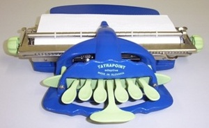

Egy írás, amit kezünkkel olvasunk
A Braille-írásről

A Braille-írás, más néven pontírás, a vakok számára készült és általuk használt, általánosan elfogadott írásrendszer. Minden jel a papír síkjából kiemelkedő hat pont kombinációja. A Braille-jeleket sorokban nyomják a papírba, és úgy olvassák, hogy az ujjukat könnyedén végigvezetik a sorokon. Ezt a speciális technikát alkalmazó ábécét a francia Louis Braille találta ki 1821-ben a vak emberek számára. Segítségével lehetővé vált a vakok számára is az írás és olvasás elsajátítása. Különleges Braille-jelek, illetve jelmódosítások léteznek a kottaírásra, a gyorsírásra és persze a világ legtöbb nyelvére, továbbá ma már olyan hatbillentyűs írógépek is vannak, melyeken egy-egy billentyű a Braille- féle hatpontos jel egy-egy pontjának felel meg.
Pontírógép
A gép hét billentyűje közül hat a Braille-írás egy-egy pontjának kialakítására, egy pedig a szóköz előállítására szolgál. Egyszerre kell lenyomni az írni kívánt betű pontösszetételének megfelelő billentyűket.
Louis Braille

A pontnak mint íráselemnek a felfedezése egy francia tüzértiszt, Charles Barbier százados nevéhez fűződik. 1819-ben kidolgozta "éjszakai írás" módszerét azzal a céllal, hogy a katonák sötétben is képesek legyenek írásos parancsokat közölni egymással. Barbier a betűket táblázatba foglalva adta meg 6-6 oszlopban. Rendszere így 36 hangot jelölt. Ezt a pontrendszert Louis Braille (1809-1852), a párizsi Vakok Intézetének tanítója fejlesztette tovább.